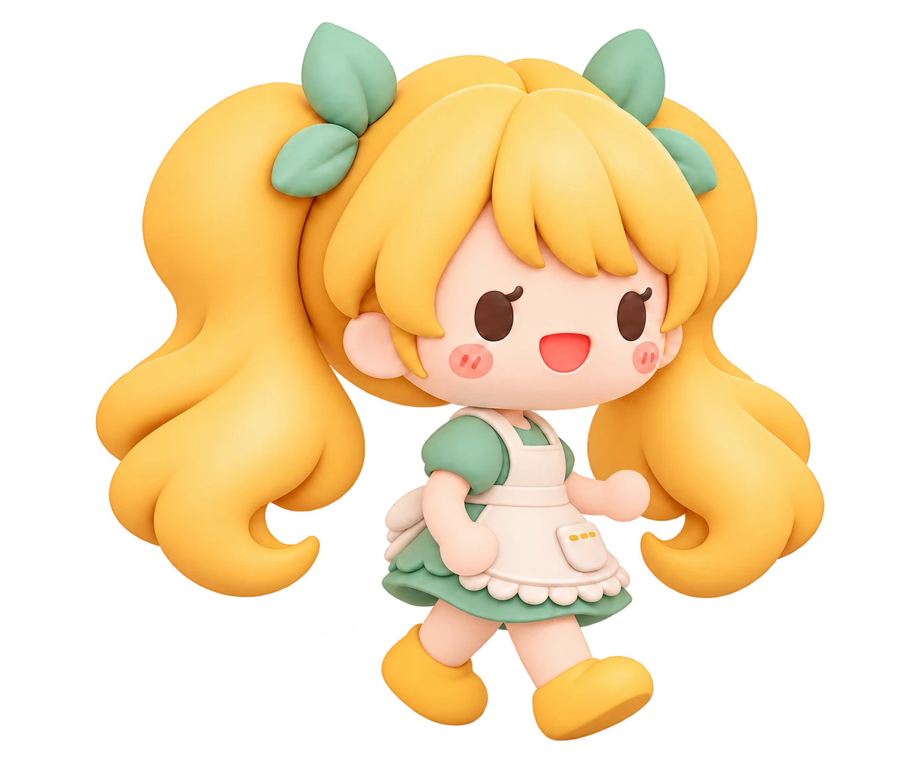

Visit transition · animation preview
Replay
📍

A LITTLE ADVENTURE
On our way to Momotoko
Good food is just around the corner.
Your next stop
Momotoko · Japanese · 1.2 km away
Directions to Momotoko ↗
Mark as visited